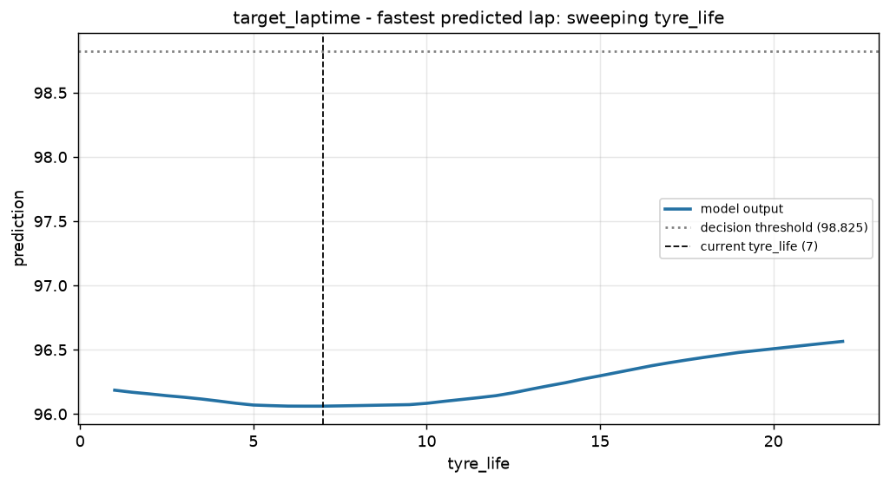
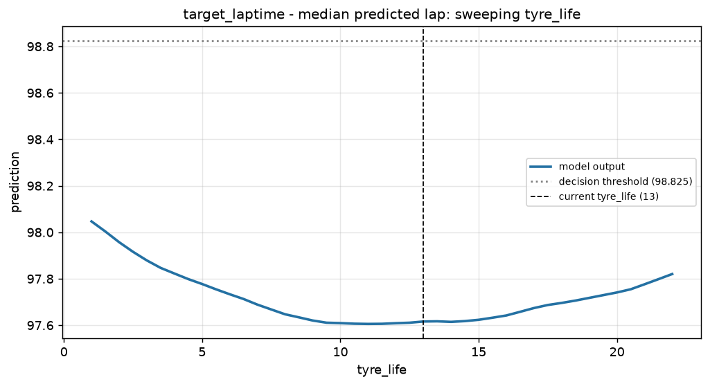
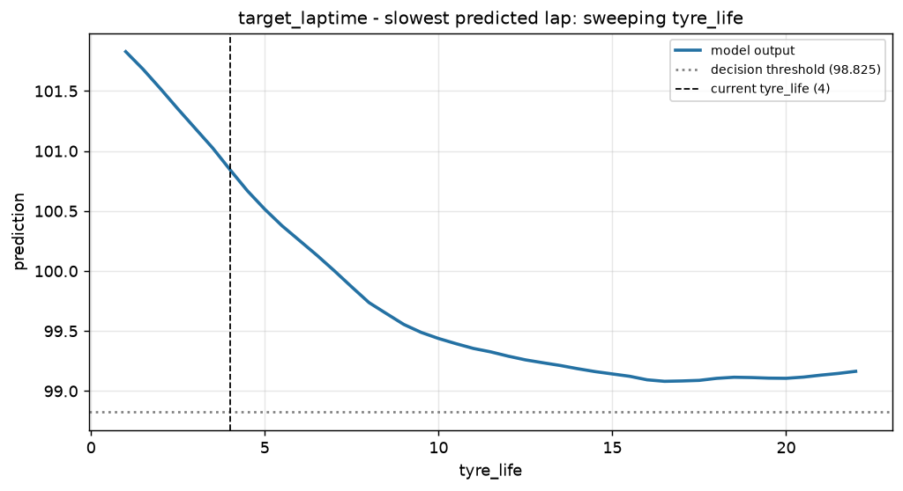
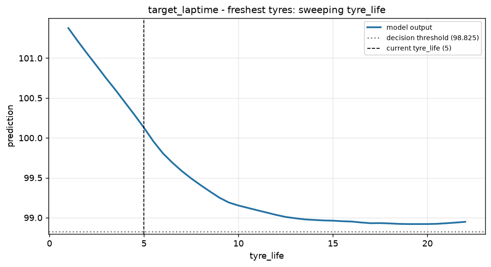
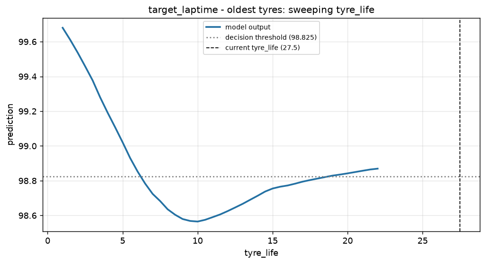
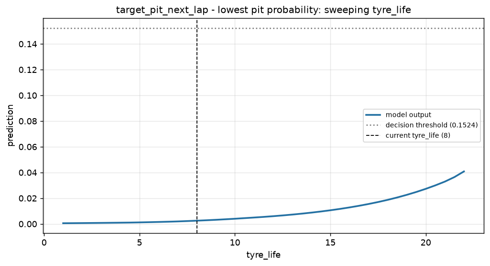
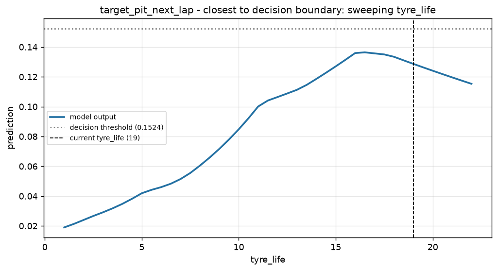
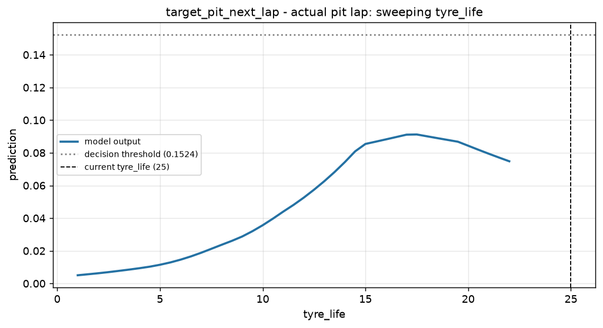

Task 8 - Counterfactual Analysis Report
Generated 2026-10-18 17:17 UTC.
What would have to change about the race state for the recommendation to flip?
Two methods, for two different questions:
- Single-feature bisection scan - hold the entire race state fixed, move one
feature, find the exact value at which the model's output crosses the decision
threshold. This is the question a race engineer actually asks (how many more
laps on these tyres?), because it yields an actionable instruction.
- DiCE (random search) - find complete alternative race states the model would
classify the other way. Useful when several different routes to a different call
exist; less actionable, because changing six things at once is not an instruction.
Every number below is the result of a real search against the real model. Where no
counterfactual exists inside the feature's observed range, that is reported as
not reachable together with the range searched.
target_laptime
Fastest Predicted Lap (test row 43, lap 47)
Scanned feature: tyre_life | Current value: 7 | Current prediction: 96.0613 | Threshold: 98.825
Searched range: [1, 22] in 43 steps
Result: not reachable. Tyre age swept over [1, 22] laps (the training range) in 0.5-lap steps; tracktemp_dev_x_tyrelife, tyrelife_x_soft, tyrelife_x_medium recomputed from it; compound, set freshness, track-temperature deviation and pace features held at this lap's values.
Changing tyre age with the rest of the race state unchanged moves the predicted lap time by: -5 laps -> +0.095s; -2 laps -> +0.009s; +2 laps -> +0.009s; +5 laps -> +0.082s.

Scanned feature: tyre_life | Current value: 13 | Current prediction: 97.6160 | Threshold: 98.825
Searched range: [1, 22] in 43 steps
Result: not reachable. Tyre age swept over [1, 22] laps (the training range) in 0.5-lap steps; tracktemp_dev_x_tyrelife, tyrelife_x_soft, tyrelife_x_medium recomputed from it; compound, set freshness, track-temperature deviation and pace features held at this lap's values.
Changing tyre age with the rest of the race state unchanged moves the predicted lap time by: -5 laps -> +0.031s; -2 laps -> -0.010s; +2 laps -> +0.007s; +5 laps -> +0.080s.

Slowest Predicted Lap (test row 178, lap 55)
Scanned feature: tyre_life | Current value: 4 | Current prediction: 100.8445 | Threshold: 98.825
Searched range: [1, 22] in 43 steps
Result: not reachable. Tyre age swept over [1, 22] laps (the training range) in 0.5-lap steps; tracktemp_dev_x_tyrelife, tyrelife_x_soft, tyrelife_x_medium recomputed from it; compound, set freshness, track-temperature deviation and pace features held at this lap's values.
Changing tyre age with the rest of the race state unchanged moves the predicted lap time by: -2 laps -> +0.674s; +2 laps -> -0.590s; +5 laps -> -1.289s.

Freshest Tyres (test row 86, lap 48)
Scanned feature: tyre_life | Current value: 5 | Current prediction: 100.1272 | Threshold: 98.825
Searched range: [1, 22] in 43 steps
Result: not reachable. Tyre age swept over [1, 22] laps (the training range) in 0.5-lap steps; tracktemp_dev_x_tyrelife, tyrelife_x_soft, tyrelife_x_medium recomputed from it; compound, set freshness, track-temperature deviation and pace features held at this lap's values.
Changing tyre age with the rest of the race state unchanged moves the predicted lap time by: -2 laps -> +0.620s; +2 laps -> -0.542s; +5 laps -> -0.975s.

Oldest Tyres (test row 42, lap 56)
Scanned feature: tyre_life | Current value: 27.5 | Current prediction: 98.9026 | Threshold: 98.825
Searched range: [1, 22] in 43 steps
Result: not reachable. Tyre age swept over [1, 22] laps (the training range) in 0.5-lap steps; tracktemp_dev_x_tyrelife, tyrelife_x_soft, tyrelife_x_medium recomputed from it; compound, set freshness, track-temperature deviation and pace features held at this lap's values.
This lap's tyre age lies outside the 1-22 range seen in training, so no in-range what-if is reported.

target_pit_next_lap
Lowest Pit Probability (test row 89, lap 51)
Scanned feature: tyre_life | Current value: 8 | Current prediction: 0.0025 | Threshold: 0.1524
Searched range: [1, 22] in 43 steps
Result: not reachable. Tyre age swept over [1, 22] laps (the training range) in 0.5-lap steps; tracktemp_dev_x_tyrelife, tyrelife_x_soft recomputed from it; compound, set freshness, track-temperature deviation and pace features held at this lap's values.
No value of tyre age between 1 and 22 flips this recommendation with the rest of the race state unchanged - the call is not sensitive to tyre age alone.

Closest To Decision Boundary (test row 171, lap 48)
Scanned feature: tyre_life | Current value: 19 | Current prediction: 0.1287 | Threshold: 0.1524
Searched range: [1, 22] in 43 steps
Result: not reachable. Tyre age swept over [1, 22] laps (the training range) in 0.5-lap steps; tracktemp_dev_x_tyrelife, tyrelife_x_soft recomputed from it; compound, set freshness, track-temperature deviation and pace features held at this lap's values.
No value of tyre age between 1 and 22 flips this recommendation with the rest of the race state unchanged - the call is not sensitive to tyre age alone.

Actual Pit Lap (test row 177, lap 54)
Scanned feature: tyre_life | Current value: 25 | Current prediction: 0.0630 | Threshold: 0.1524
Searched range: [1, 22] in 43 steps
Result: not reachable. Tyre age swept over [1, 22] laps (the training range) in 0.5-lap steps; tracktemp_dev_x_tyrelife, tyrelife_x_soft recomputed from it; compound, set freshness, track-temperature deviation and pace features held at this lap's values.
No value of tyre age between 1 and 22 flips this recommendation with the rest of the race state unchanged - the call is not sensitive to tyre age alone. This lap's own tyre age (25) is outside that training range, so the model is extrapolating here.

DiCE - diverse whole-row counterfactuals
Each row above is a complete alternative race state the model would classify the other way. Values are in standardised units; a delta of +1.0 means one standard deviation of that feature as observed in training.
| # |
Features changed |
Changes |
| 1 |
1 |
tracktemp_dev_x_tyrelife -17.276 -> +0.716 (+17.993) |
| 2 |
1 |
field_median_lag1 +97.432 -> +101.702 (+4.270) |
| 3 |
1 |
tracktemp_dev_x_tyrelife -17.276 -> +6.705 (+23.981) |